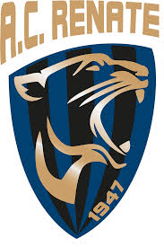

Renate

L'Associazione Calcio Renate, meglio nota come Renate, è una società calcistica italiana con sede nel comune di Renate. Milita in Serie C, la terza divisione del campionato italiano.
Fondata nel 1947 come Unione Sportiva Renatese e ricostituita nel 1955 come Unione Sportiva San Giovanni Bosco, ha mutato denominazione nel 1961. Vanta come miglior risultato della propria storia alcune partecipazioni alla terza divisione calcistica italiana, ove il miglior piazzamento è costituito da due terzi posti consecutivi.